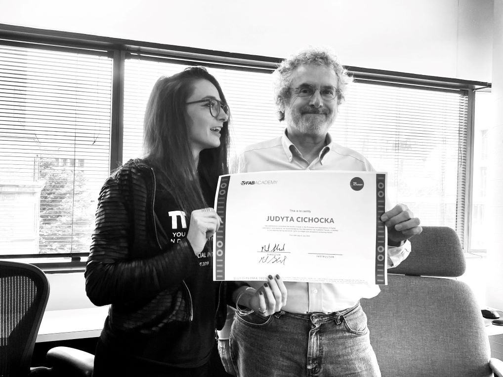

Mission

 Fab Foundation Poland is:
Fab Foundation Poland is:
- a non-profit organisation (verified for Google Nonprofits- Charity ID: 8982288193) and,
- a research and knowledge-dissemination organisation (compling with the art. 2 pkt. 83 of COMMISSION REGULATION (EU) No 651/2014 of 17 June 2014 declaring certain categories of aid compatible with the internal market in application of Articles 107 and 108 of the Treaty link)
Our aim: Conducting public benefit activities in the scientific, scientific and technical, educational, cultural and artistic spheres. Conducting basic research, industrial research, experimental development and disseminating the results of such activities on a large scale through teaching, publication, and knowledge transfer in the field of broadly understood innovation with particular emphasis on digital fabrication, design technologies and art.
Our mission is to:
- establish a research center into digital design, fabrication and art
- provide the fab lab facilities to public in Poland
- organize the Fab Academy course led by prof. Neil Gershenfeld (MIT) in Poland
- develop open-source projects to help the housing crises in Poland & Ukraine
- create inspiring environment & supportive community for people of any age, race, orientation, prior experience to make them feel cable of creating (almost) anything

Fig. Judy receives her Fab Academy diploma and blessings for Fab Foundation Poland from Prof. Neil Gershenfeld. MIT. Boston. 15th August 2023.